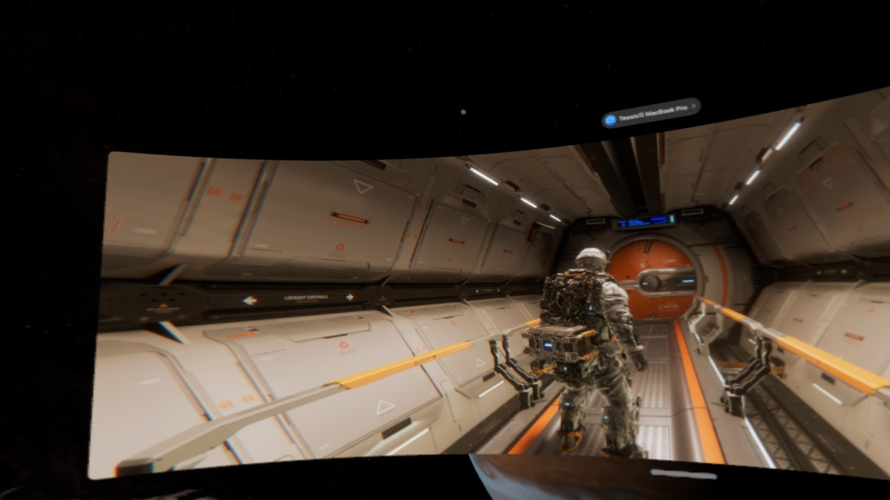
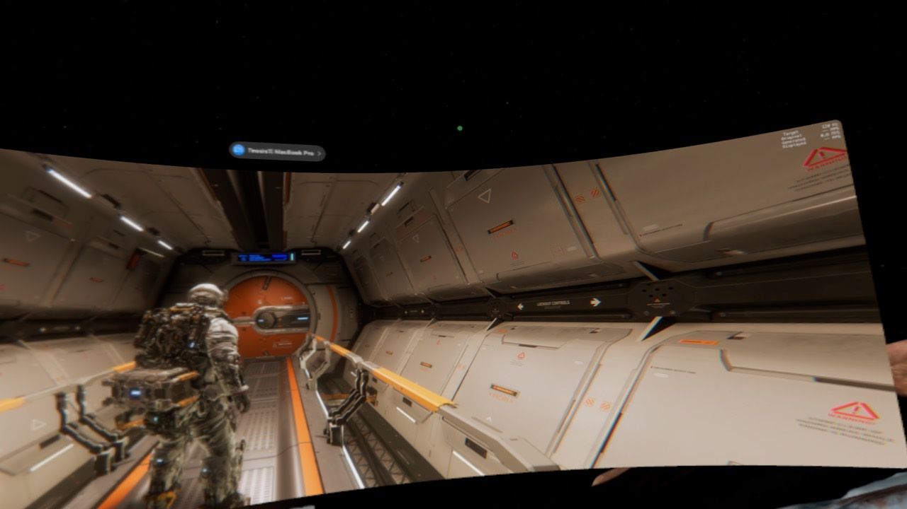

TWO WORLD FIRSTS*Game Mode DLSS5 Emulation
Run Windows gameson your Mac.
Windows games on Mac, with native macOS Game Mode and real-time DLSS5 Emulation.
Apple Silicon · macOS 27 or later · Rosetta required
Read the guide ↗Support independent development and source disclosure with a GitHub Star or sponsorship.

VISION PRO · MAC VIRTUAL DISPLAY
Ultrawide gaming on Vision Pro
Real gameplay through Mac Virtual Display on Vision Pro.
Keep AWDL on while using Mac Virtual Display.


GAME COMPATIBILITY
Find out which games you can play.
Check which games are playable and what issues have been reported. Each report includes the tested ForgePlay version and Mac specifications when available.
Community reports added to the website. Displayed separately from the in-app compatibility database.
Loading game compatibility…
FORGEPLAY FEATURES
Windows games with macOS Game Mode.
macOS gives your game priority.
ForgePlay enables macOS Game Mode for Windows games, giving them priority access to CPU and GPU resources and reducing interference from background tasks.
Apple’s Game Mode guide ↗Manage setup and launch in one place.
Manage the Wine runtime, graphics backends, per-game settings, and play sessions together in ForgePlay.
SupportWe publish all the code we develop or modify.
ForgePlay publishes all source it develops or modifies under the applicable component licenses. Changes kept outside upstream are accompanied by their rationale, complete patch sets, and build materials. We will not use “mostly public” to obscure important exceptions.
Browse the published source ↗01 / macOS Game Mode — THE WORLD’S FIRST*
*To our knowledge, the first publicly documented open-source Windows gaming platform designed to carry a live Wine game session through a native macOS Game Mode-capable host, as of 28 July 2026.
The published source includes ForgePlay, the Game Mode host, Wine patches, build records, and license notices.
DIRECTX → METAL → macOS GAME MODEWHY SUPPORT FORGEPLAY
Support independent development and open source.
ForgePlay goes beyond criticizing CodeWeavers for stagnation and opaque source disclosure. Through independently developed technology and published source code, it aims to show that better implementations are possible and to drive change through competition. Help others discover the project with a GitHub Star, or sponsor its independent development.
OTHER PROJECTS
More apps and games by the same developer
Explore released apps and projects in development.
Loading the app catalog…
CURRENT STABLE RELEASE
Download ForgePlay
Download the latest stable release to run Windows games on your Mac.
AVAILABLE NOW

WHY FORGEPLAY WAS CREATED
Open source belongs to no one exclusively.
ForgePlay was created to confront CodeWeavers’ complacency and de facto privatization of open-source Wine in the public interest. CodeWeavers builds its business on the community’s work, yet keeps some improvements and compatibility knowledge as advantages exclusive to its own products and does not clearly explain its authorization for commercial distribution. It nevertheless touts its contributions to Wine, but that credit is no absolution for these problems. Moreover, why has a company with years of experience and resources not made improvements that an individual developer can conceive and implement? With so much room for progress, has it not simply grown complacent in the absence of real competition? That is why ForgePlay does not stop at criticism. By implementing improvements they have not made, it demonstrates that an individual developer can build technology and features better than what already exists. And to keep those results from being fenced off yet again, ForgePlay publishes all the source code it develops or modifies. For changes not incorporated upstream, it also provides the reasons, complete patch sets, and build materials. It does not hide critical exceptions behind claims that ‘most of the source is public’; anyone can examine, modify, and build on the work. Creating competition through better implementations and public results, so that existing products can no longer coast on their current position—that is why ForgePlay is developed and made public.
“If progress stalled because no one could challenge it, we’ll build the challenger ourselves!”Read the developer’s statement and supporting evidence